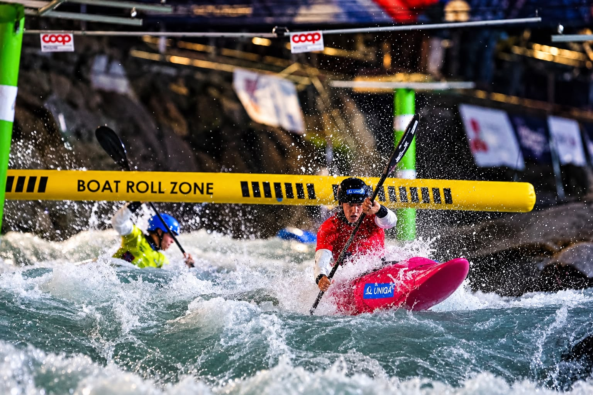
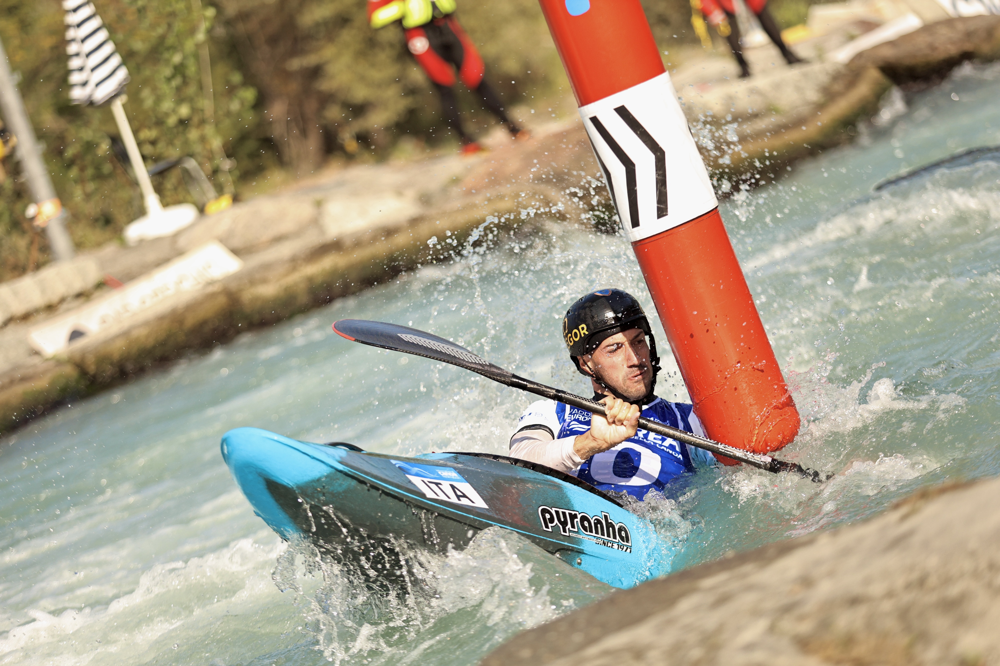

Europe’s leading canoe slalom and kayak cross athletes met in Ivrea from 24 to 26 September for three days of racing on one of the continent’s most technical artificial whitewater courses.
France finished first on the medal table with three gold, four silver and two bronze medals. Czechia followed with three gold, three silver and one bronze, while host nation Italy matched France’s nine-medal total with two gold, three silver and four bronze.

Team titles open a high-intensity championship
France opened the championships with men’s K1 and C1 team victories, Italy won the women’s C1 team title and Slovakia took women’s K1 team gold. Individual racing added another home medal when Elio Maiutto claimed men’s C1 bronze behind European champion Yohann Senechault of France and Czech silver medallist Lukas Kratochvil.

Paddle Europe staged the championships with the Italian Canoe Federation and the local organising team in Ivrea. The programme awarded 12 continental titles across canoe slalom, team events and kayak cross, closing with France at the top of a medal table that featured eight nations.
Image Media photographers Eduardo Castro and Giorgia Donato documented the championship from trackside, capturing the speed, spray and close control demanded by the Dora Baltea course.
Image Media coverage
Reporting: IM News Editorial Desk
Coverage photographers: Eduardo Castro and Giorgia Donato / Image Media
Event dates, format and results checked against official Paddle Europe reporting.